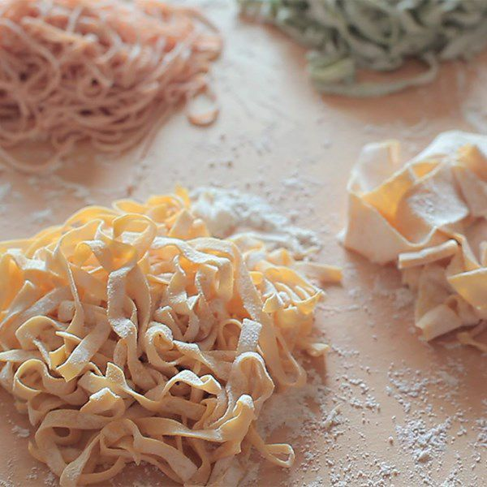

Description
This is a simple fresh pasta recipe you wont regret having on your reportoire. Take the time to master, you wont regret..
Ingredients
- 1 pinch saffron threads
- 2 tablespoons hot water
- 2 ½ cups Italian-style tipo 00 flour
- 3 large eggs
- 1 pinch salt
Preparation Steps
- Soak saffron threads in hot water for 30 minutes.
- Place flour on a marble or wooden work surface. Make a well in the center and crack in eggs; add salt and saffron water. Gently beat eggs, saffron, and water using a fork, incorporating the surrounding flour, until mixture is runny. Pull remaining flour into the center using a bench scraper, incorporating it until dough forms a ball. Add more water, 1 tablespoon at a time, if dough is too stiff.
- Knead dough with your hands by flattening the ball, stretching it, and folding the top towards the center. Turn 45 degrees and repeat until dough is soft and smooth, about 10 minutes.
- Shape dough into a ball. Place in a bowl and cover with plastic wrap. Refrigerate until firm, 30 minutes to 1 hour.
- Roll out the dough with a pasta machine or with a rolling pin and cut into lasagna sheets or tagliatelle.
Cook's note:
This recipe yields tagliatelle for 4 to 5 servings or lasagna sheets for 6 to 8 servings.